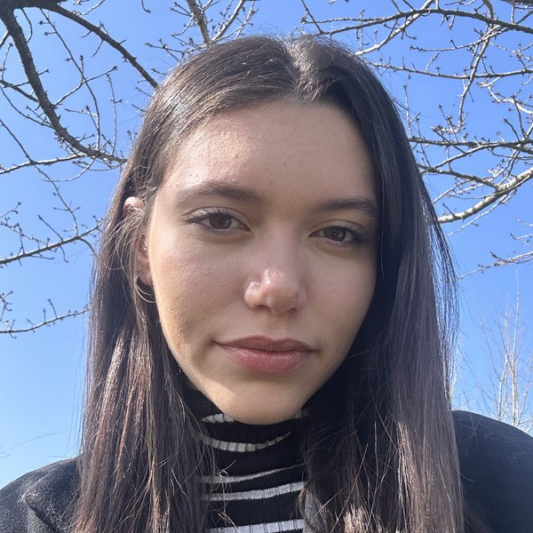
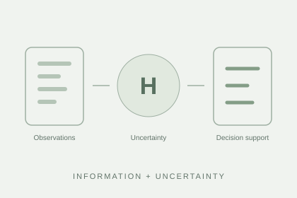
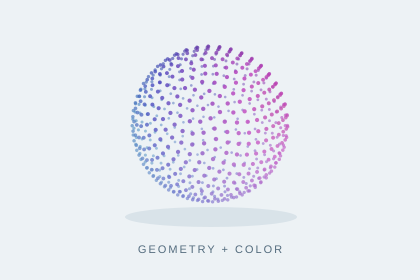
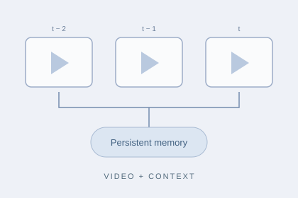

Eylül Pelin Kılıç
Hi! I am an undergraduate researcher at BAVLab, Sabancı University, supervised by Prof. Selim Balcısoy.
I am a fourth-year Computer Science and Engineering student at Sabancı University, with a minor in Mathematics. I am interested in computer vision, visual representation learning, and machine learning.
E-mail: pelin.kilic[at]sabanciuniv[dot]edu

News
- Started as an Undergraduate Research Assistant at the University of Cambridge, advised by Prof. Cengiz Öztireli.
- Started as an Undergraduate Research Assistant at the National University of Singapore, advised by Prof. Angela Yao.
- Started my exchange semester at the National University of Singapore.
Older news
- Became President of Google Developer Groups On Campus at Sabancı University.
- Selected as a Challenger by the Turkish Entrepreneurship Foundation (80 among 149,766 applicants).
Research
-

Uncertainty representations for clinical machine learning
Advisor: Prof. Selim Balcısoy (BAVLab) · Siyami Ersek Cardiovascular Surgery Research Hospital
ML pipelines for differentiating clinically overlapping cardiac conditions, with entropy-based uncertainty representations.
2024 – Present
-

Geometry-aware representations for colored point clouds
Advisor: Prof. Cengiz Öztireli · University of Cambridge
Representations that jointly model 3D structure and surface color in point clouds.
May 2026 – Present
-

Personalized video understanding
Advisor: Prof. Angela Yao · National University of Singapore
Personalized VideoQA in online and streaming settings, with test-time adaptation and memory.
May 2026 – Present
Selected course projects
-
Morphology-based cell mitosis detection
CS419 · Digital Image and Video Processing · Sabancı University
An unsupervised, label-free framework for detecting mitotic cells in DIC microscopy images, using morphology-based segmentation and an entropy-weighted mitosis score. Improved F1 from 0.67 to 0.87 over uniform weighting on DIC-C2DH-HeLa.
Sep 2025 – Jan 2026
-
Deck composition and match outcome prediction
DSA210 · Introduction to Data Science · Sabancı University
Collected 1,500 matches from 50 players of a competitive online strategy game through its public API and engineered ~350 deck-composition features (card presence, card-type counts, average resource cost). Hypothesis tests showed that lower average resource cost, card-type variety, and tank–support combinations are significantly associated with winning; compared regularized logistic regression, random forests, and gradient boosting, with and without PCA.
Spring 2025
Experience & education
Research & work
- BAVLab, Sabancı University · Undergraduate Researcher2024 – Present · Istanbul
- University of Cambridge · Undergraduate Research AssistantMay 2026 – Present · Remote
- National University of Singapore · Undergraduate Research AssistantMay 2026 – Present · Remote
- Sabancı University · Learning Assistant (CS201, CS204, CS300)2024 – 2025 · Istanbul
- Mitsubishi Electric · Information Technologies InternJul 2024 · Manisa
Education
- Sabancı University · B.S. Computer Science and Engineering, Minor in Mathematics2022 – 2027 (expected) · Istanbul
- National University of Singapore · ExchangeJan 2026 – May 2026 · Singapore
Activities
- Google Developer Groups On Campus, Sabancı University · PresidentSep 2024 – Jun 2025 · Istanbul
- Turkish Entrepreneurship Foundation · ChallengerSep 2023 – Jun 2024